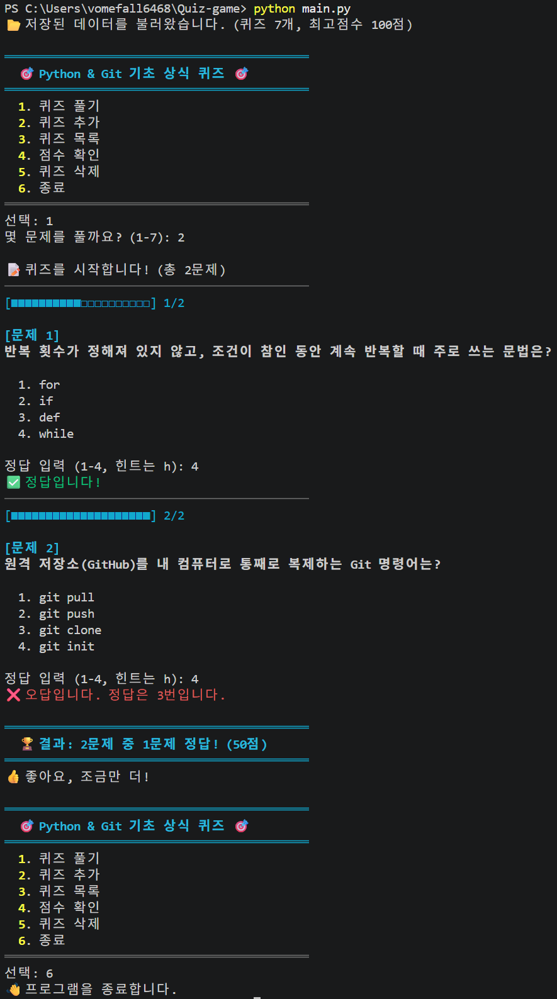
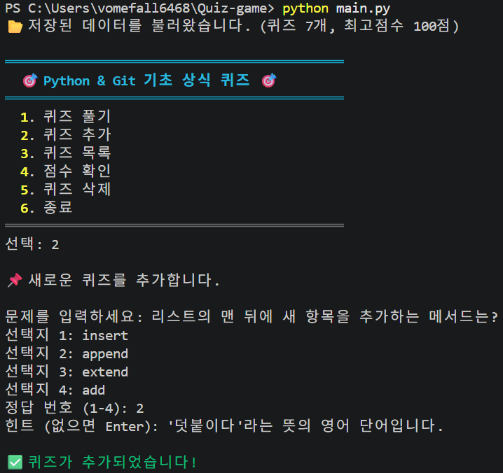
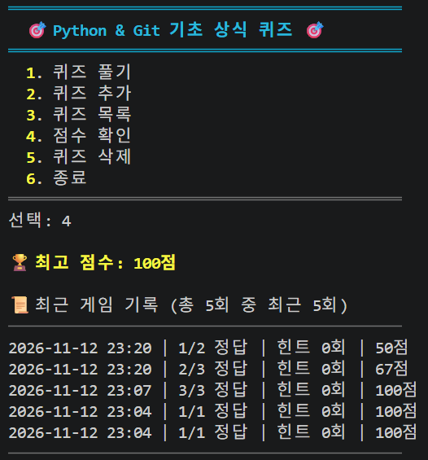

주요 기능
📝 퀴즈 풀기
문제 수를 골라 무작위 순서로 풀고 100점 만점으로 채점합니다.
➕ 퀴즈 추가
문제, 선택지 4개, 정답, 힌트를 입력해 나만의 문제를 만듭니다.
📋 퀴즈 목록
등록된 문제를 확인합니다. 힌트가 있는 문제는 💡로 표시됩니다.
🏆 점수 확인
최고 점수와 최근 5회 게임 기록을 보여줍니다.
🗑️ 퀴즈 삭제
번호를 골라 삭제하고, 확인 단계에서 취소할 수 있습니다.
🛟 백업과 복구
저장 전에 자동 백업하고, 파일이 손상되면 원하는 백업으로 복원합니다.
학습 목표 달성 현황
미션 가이드의 학습 목표 15개를 이 프로젝트의 어디에서 구현했는지 정리했습니다. 항목을 누르면 📘 일반 개념, 이 프로젝트에서 구현한 곳, 시연 방법이 펼쳐집니다.
🐍 Python 기초
1변수의 의미와 사용 이유
📘 개념 값에 붙이는 이름표입니다. 값을 저장해 두고 다시 쓰거나, 반복하면서 바뀌는 값을 추적하려고 씁니다.
play()의 correct, earned
값에 이름을 붙여 저장해 두는 상자입니다. 문제를 풀 때마다 맞힌 개수를 correct에 기억해 두어야 마지막에 결과를 보여줄 수 있습니다.
▶ 시연: 퀴즈를 풀고 결과 점수 확인
2int, str, bool, list, dict의 차이
📘 개념 int는 정수, str은 글자, bool은 참/거짓입니다. list는 번호(0부터)로 찾는 묶음, dict는 이름(키)으로 찾는 묶음입니다.
Quiz.__init__(), add_history()
정답 번호는 int, 문제는 str, 힌트 사용 여부는 bool, 선택지 4개는 list, 게임 기록 1건은 dict입니다. list는 번호로, dict는 이름(키)으로 값을 찾습니다.
▶ 시연: state.json을 열어 자료형 확인
3if / elif / else 조건 분기
📘 개념 조건에 따라 다른 동작을 하게 하는 문법입니다. 위에서부터 검사해서 처음 참인 블록 하나만 실행합니다.
run()의 메뉴 분기
선택한 메뉴 번호에 따라 처음으로 참인 조건 하나만 실행합니다. 1~5가 아니면 else에서 저장 후 종료합니다.
▶ 시연: 메뉴 1~6 선택
4for와 while의 차이와 선택
📘 개념 횟수나 대상이 정해져 있으면 for, 조건이 만족될 때까지 몇 번 돌지 모르면 while을 씁니다.
play()의 for, run()·get_number()의 while
출제는 정해진 문제 수만큼이라 for, 메뉴와 입력 검증은 몇 번 반복될지 모르기 때문에 while을 썼습니다.
▶ 시연: 문제 수만큼 출제 / 잘못된 입력을 넣으면 다시 묻기
5함수, 매개변수, 반환값
📘 개념 반복되는 동작을 묶어 이름을 붙인 것입니다. 매개변수로 값을 받고, return으로 결과를 돌려줘서 재사용합니다.
get_number(prompt, min_value, max_value)
범위를 매개변수로 받고, 검증을 통과한 숫자를 반환합니다. 메뉴, 정답 번호, 문제 수, 삭제 번호에서 범위만 바꿔 재사용합니다.
▶ 시연: 메뉴에서 9, 문제 수에서 100 입력 → 각각 다른 범위로 안내
🧱 클래스와 객체
6클래스의 의미와 사용 이유
📘 개념 데이터(속성)와 동작(메서드)을 묶은 설계도이고, 그걸로 만든 것이 객체입니다. 붕어빵 틀과 붕어빵의 관계입니다.
Quiz, QuizGame, BackupManager
데이터와 기능을 묶은 설계도입니다. 문제 1개, 게임 전체, 백업을 각각 다른 클래스로 나눠서 고칠 곳을 찾기 쉽게 했습니다.
▶ 시연: quiz.py, quiz_game.py, backup.py 파일 구조 보기
7__init__과 self의 역할
📘 개념 __init__은 객체를 만들 때 자동으로 실행되어 처음 값을 정하고, self는 그 객체 자신이라 객체마다 자기 데이터를 쓰게 해 줍니다.
Quiz.__init__(), Quiz.is_correct()
__init__은 객체가 만들어질 때 자동으로 실행되어 속성을 준비합니다. self는 지금 사용 중인 그 객체 자신이라서, 문제마다 자기 정답과 비교할 수 있습니다.
▶ 시연: 문제마다 다른 정답으로 채점되는 것 확인
8속성과 메서드 정의·활용
📘 개념 속성은 객체가 가진 데이터라 괄호 없이 쓰고, 메서드는 객체가 하는 동작이라 괄호를 붙여 호출합니다.
quiz.answer(속성) / quiz.is_correct()(메서드)
속성은 객체가 가진 데이터(괄호 없음), 메서드는 객체가 할 수 있는 동작(괄호 있음)입니다.
▶ 시연: 퀴즈 목록과 퀴즈 풀기
💾 파일 입출력
9파일 열기·읽기·쓰기
📘 개념 파일은 열기 → 읽기/쓰기 → 닫기 순서로 다룹니다. "r"는 읽기, "w"는 덮어쓰기, "a"는 덧붙이기이고, with를 쓰면 자동으로 닫힙니다.
load(), save()의 with open(..., encoding="utf-8")
"r"로 읽고 "w"로 덮어씁니다. with는 블록이 끝나면 오류가 나도 파일을 자동으로 닫아 줍니다.
▶ 시연: 퀴즈 추가 → 종료 → 다시 실행해도 유지
10JSON의 의미와 사용 이유
📘 개념 데이터를 텍스트로 표현하는 표준 형식입니다. dict·list와 구조가 같아 변환이 쉽고, 사람이 읽을 수 있고, 다른 언어와도 주고받을 수 있습니다.
json.load() / json.dump(), to_dict() / from_dict()
dict·list와 구조가 같아 변환이 쉽고, 사람이 직접 열어 볼 수 있으며, 표준 라이브러리만으로 처리할 수 있습니다.
▶ 시연: state.json 내용 보기
11try / except 오류 처리
📘 개념 오류가 날 수 있는 코드를 try에 넣고, 오류가 나면 except에서 처리해 프로그램이 멈추지 않게 합니다. 오류 종류별로 구체적으로 잡는 것이 좋습니다.
get_number(), load(), main()
숫자 변환 실패(ValueError), 파일 없음·손상, Ctrl+C·입력 종료를 각각 잡아서 멈추지 않게 했습니다. 구체적인 오류를 먼저 잡습니다.
▶ 시연: abc 입력 / state.json을 {{{로 손상 / Ctrl+C
🌿 Git 기초
12Git의 의미와 필요성
📘 개념 파일의 변경 이력을 기록하는 버전 관리 도구입니다. 게임의 세이브 포인트처럼 원하는 시점으로 되돌릴 수 있고, 여러 명이 협업할 수 있습니다.
기능 단위 커밋 이력
파일의 변경 이력을 기록하는 버전 관리 도구입니다. 언제 무엇을 바꿨는지 남기고, 이전 상태로 되돌리고, 여러 사람이 나눠 작업할 수 있습니다.
▶ 시연: git log --oneline
13init · add · commit · push · pull · checkout · clone
📘 개념 작업 폴더 → add(스테이징) → commit(로컬 기록) → push(GitHub) 순서로 흐르고, pull은 GitHub의 변경을 받아 합칩니다.
README의 Git 작업 기록
init은 저장소 만들기, add는 커밋할 파일 고르기, commit은 기록 저장, push는 GitHub에 올리기, pull은 받아서 합치기, checkout은 브랜치 이동, clone은 저장소 전체 복제입니다.
▶ 시연: git log --oneline --graph
14브랜치 생성과 병합
📘 개념 브랜치는 main을 건드리지 않고 따로 작업하는 공간이고, merge로 합칩니다. 같은 곳을 다르게 고쳤으면 충돌이 나서 직접 정리해야 합니다.
feature/ 브랜치 → merge --no-ff
main은 항상 동작하는 상태로 두고, 기능마다 브랜치에서 작업한 뒤 병합했습니다. --no-ff로 병합 기록이 그래프에 남습니다.
▶ 시연: 그래프에서 갈라졌다 합쳐진 선 확인
15clone과 pull로 변경사항 가져오기
📘 개념 clone은 저장소가 없을 때 처음 한 번 전체를 복사하고, pull은 이미 있는 저장소에 새 변경만 받아 합칩니다. (pull = fetch + merge)
quiz-game-clone에서 수정 → 원래 폴더에서 pull
clone은 저장소가 없을 때 처음 한 번 전체를 복사하고, pull은 이미 있는 저장소에 새 변경사항만 가져와 합칩니다.
▶ 시연: 공용 컴퓨터에서 git clone으로 받아 실행
학습 목표 슬라이드
15개 학습 목표를 동료에게 설명하려고 11장으로 정리했습니다. 버튼이나 키보드 ← → 로 넘겨 보세요.
실행 화면






웹에서 맛보기
실제 게임은 Python으로 동작합니다. 이 화면은 기본 퀴즈 7문제를 브라우저에서 체험해 보는 소개용 버전입니다.
코드 구조
Quiz
quiz.py
문제 1개: 출력, 정답 확인, 저장 형식 변환
QuizGame
quiz_game.py
게임 전체: 메뉴, 입력 검증, 점수, 저장/불러오기
BackupManager
backup.py
백업 생성, 백업 목록, 복구 로그
개발 과정
기능마다 브랜치를 만들어 작업하고 main에 병합했습니다.
- feature/play 퀴즈 풀기
- feature/random 랜덤 출제
- feature/count 문제 수 선택
- feature/hint 힌트와 점수 차감
- feature/delete 퀴즈 삭제
- feature/history 게임 기록
- feature/ui 색상과 진행률
- feature/backup 백업과 복구
- feature/landing 프로젝트 소개 웹페이지
- feature/readme-design README 배너와 레이아웃
- feature/learning-goals 학습 목표 달성 현황
- feature/basic-concepts 학습 목표 기본 개념 정리
- feature/learning-slides 학습 목표 슬라이드